출발
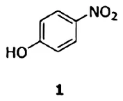
4-Nitrophenol1
22장 해열진통제·NSAID 9종 + 23장 항알레르기약물 5종·항궤양약물 2종. KEY 22-1 Schmidt · 22-2 Fischer indole · 22-3 HWE · 23-1 Sonogashira · 23-2 von Braun · 23-3 Boekelheide, 그리고 Gabriel–Colman · Knorr 피라졸 · Curtius · Ritter · Dieckmann이 나와요. 가릴 항목을 고르고, 가려진 칸을 눌러 답을 확인하세요. 다시 누르면 또 가려집니다. 구조 그림은 모두 교재 스킴에서 가져왔어요.
법 1은 4-nitrophenol을 Sn/HCl로 환원한 뒤 Ac₂O로 N만 아세틸화(N이 O보다 친핵성). 법 2는 4-hydroxyacetophenone을 하이드라존으로 만들고 NaNO₂/H₂SO₄를 넣어 Schmidt 전위 (KEY 22-1)로 케톤 C–C 사이에 질소를 끼워 넣는다.
| 단계 | 핵심반응 | 무엇이 바뀌나 |
|---|---|---|
| 법1-1 | 니트로 환원 (Sn/HCl) | NO₂ → NH₂ |
| 법1-2 | N-아세틸화 (Ac₂O) | NH₂ → NHAc |
| 법2-1 | 하이드라존 (H₂NNH₂) | C=O → C=N–NH₂ |
| 법2-2 | Schmidt 전위 (KEY 22-1) | Ar–CO–CH₃ → Ar–NH–CO–CH₃ |

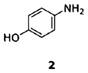
금속–산 환원 · Sn이 전자를, HCl이 양성자를 준다(발생기 수소). NO₂ → NO → NHOH → NH₂. Fe/HCl로 하면 Béchamp.
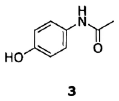
선택적 N-아세틸화 · 아민 N이 페놀 O보다 친핵성이 커서 NHAc만 생긴다.
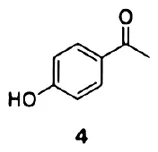
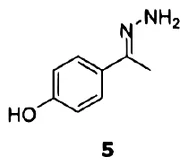
하이드라존 · 하이드라진 NH₂가 C=O에 부가하고 물이 빠져 C=N–NH₂.
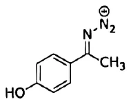
디아조화 · HNO₂에서 생긴 NO⁺가 하이드라존 NH₂를 공격하고 물이 빠져 C=N–N₂⁺. 케톤 + HN₃로 가는 Schmidt 중간체 A와 같은 것.
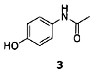
Schmidt (KEY 22-1) · N₂가 떠나는 순간 anti 쪽 아릴이 C에서 N으로 이동 → 니트릴륨(B) → H₂O 부가 → 이미놀 → 호변이성 → 아마이드. 아릴이 옮겨 가서 질소가 고리에 붙는다.
법 1은 하이드라존을 만들어 Fischer indole (KEY 22-2)로 인돌을 닫고, COOH를 t-Bu 에스터로 보호한 뒤 NaH로 인돌 N-아실화, 마지막에 210 °C 열분해로 보호기를 뗀다. 법 2는 순서를 뒤집어 하이드라진 단계에서 먼저 N을 아실화하고 나중에 인돌을 닫는다.
| 단계 | 핵심반응 | 무엇이 바뀌나 |
|---|---|---|
| 1 | 하이드라존 | ArNHNH₂ + 케톤 → ArNHN=C |
| 2 | Fischer indole (KEY 22-2) | 하이드라존 → 인돌 (−NH₃) |
| 3 | 에스터 가수분해 | CO₂Me → CO₂H |
| 4 | t-Bu 에스터화 (DCC) | CO₂H → CO₂t-Bu (보호) |
| 5 | 인돌 N-아실화 (NaH) | N–H → N–COAr |
| 6 | 열분해 (210 °C) | CO₂t-Bu → CO₂H + 이소부텐 |
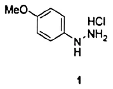
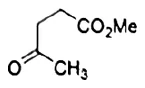
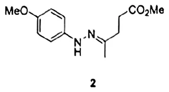
하이드라존 · 말단 NH₂가 케톤 C=O에 부가하고 물이 빠져 C=N.
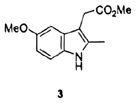
Fischer indole (KEY 22-2) · 하이드라존 → 엔하이드라진 → [3,3]-시그마트로픽 → 방향족화 → 고리화 → −NH₃. 케톤의 CH₂ 쪽이 C3(아세트산 사슬), CH₃ 쪽이 C2-메틸이 된다.
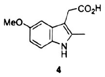
비누화 · CO₂Me → CO₂H.
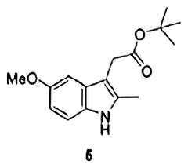
DCC 활성화 · COOH를 O-아실이소우레아로 바꿔 부피 큰 t-BuOH도 붙게 한다(ZnCl₂ 보조). 다음 NaH 단계에서 COOH의 산성 H를 가리는 보호기.
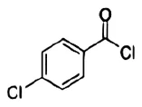
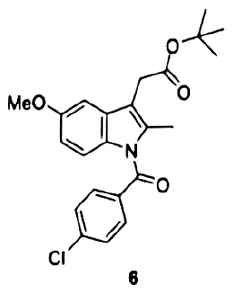
N-아실화 · 인돌 N의 전자쌍은 방향족성에 쓰여 친핵성이 약하다. NaH로 N–H를 떼어 음이온으로 만들어야 아실화된다.
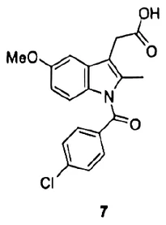
열분해 · t-Bu 에스터가 가열로 이소부텐을 내놓고 COOH가 된다. 염기 가수분해를 쓰면 N-아실(아마이드)까지 끊어지므로 열로 골라 뗀다.
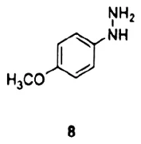
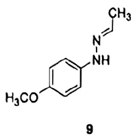
말단 NH₂ 보호 · 아세트알데하이드로 말단 NH₂를 C=N으로 묶어 아릴 쪽 NH만 남긴다.
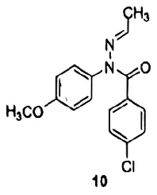
N-아실화 · 남은 Ar–NH를 산염화물로 아실화. 인돌이 되기 전에 해 두면 법 1의 까다로운 인돌 N-아실화가 필요 없다.
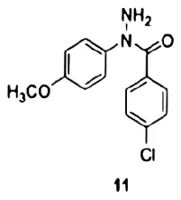
탈보호 · 산으로 C=N을 가수분해해 아세트알데하이드를 떼면 말단 NH₂가 돌아온다.
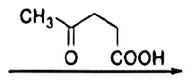
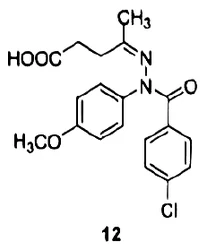
하이드라존 · NH₂ + levulinic acid 케톤 → C=N. 처음부터 산이라 나중에 에스터를 풀 필요가 없다.
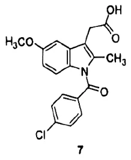
Fischer indole (KEY 22-2) · [3,3] → 고리화 → −NH₃. N-아실과 COOH가 달린 채로 인돌이 닫힌다.
fluorobenzene에 Friedel–Crafts 아실화를 걸면 HBr이 빠진 enone이 분자내 1,4-부가로 인다논을 만든다 → 벤질 Grignard 1,2-부가 후 탈수로 인덴 → Triton B로 glyoxylic acid와 알돌형 축합 → HCl로 호변이성·이성질화해 (Z)-벤질리덴 → H₂O₂로 설파이드를 설폭사이드로.
| 단계 | 핵심반응 | 무엇이 바뀌나 |
|---|---|---|
| 1 | Friedel–Crafts + 분자내 1,4-부가 | PhF → 5-fluoro-2-methylindanone |
| 2 | Grignard 1,2-부가 → β-제거 | C=O → C–OH → 인덴 |
| 3 | 알돌형 축합 (Triton B) → 탈수 | 인덴 CH + OHC–COOH → C=CH–COOH |
| 4 | 호변이성 · 이성질화 (HCl) | (E) → 안정한 (Z)-벤질리덴 |
| 5 | 산화 (H₂O₂) | S–CH₃ → S(=O)–CH₃ |
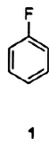
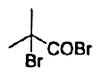
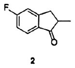
Friedel–Crafts · 아실륨이 벤젠을 공격해 α-bromo 케톤(A)이 되고, AlCl₃가 Br⁻을 빼 enone(B)을 만든다. 그 enone을 같은 분자의 고리가 분자내 1,4-부가로 공격해 5원 고리(인다논)가 닫힌다. F는 아실기의 para에 남는다.
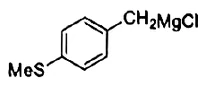
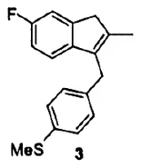
1,2-부가 + 탈수 · 벤질 Grignard가 케톤에 부가해 3차 알코올이 되고, 산 조건에서 β-제거(E1)로 물이 빠져 인덴의 C=C가 생긴다.
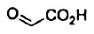
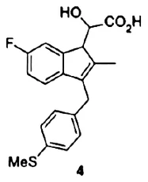
알돌형 축합 · Triton B가 인덴의 산성 H(두 고리 사이 sp³ 탄소)를 떼고, 생긴 음이온이 glyoxylic acid의 CHO를 공격한다.
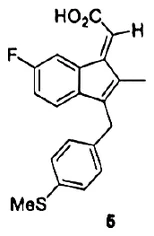
탈수 · 알돌 생성물에서 물이 빠져 exo 쪽 C=C(아크릴산 부분)가 만들어진다.
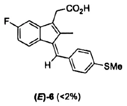
호변이성 · 산 조건에서 이중결합 위치가 옮겨 가며 벤질리덴 구조가 된다. 이때 (E)는 거의 생기지 않는다.
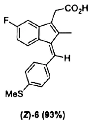
이성질화 · 입체장애가 덜한 (Z)가 열역학적으로 안정해 거의 전부 (Z)로 모인다. 최종 약물의 (Z)는 여기서 정해진다.
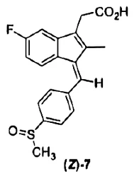
산화 · 황의 비공유전자쌍이 H₂O₂의 O–O를 공격해 설폭사이드(S=O)까지만 간다. 더 산화하면 설폰이 되므로 당량·온도를 조절한다.
2,6-dichloroacetanilide를 bromobenzene과 Ullmann 축합해 디아릴아민 골격을 만들고, 아세틸을 떼어 chloroacetyl chloride로 다시 아실화 → AlCl₃ 분자내 Friedel–Crafts로 5원 고리(인돌린-2-온) → 가수분해로 고리를 열면 아세트산이 나온다. 고리를 닫았다가 다시 여는 것이 핵심.
| 단계 | 핵심반응 | 무엇이 바뀌나 |
|---|---|---|
| 1 | Ullmann 축합 (Cu) | Ar–NHAc + PhBr → 디아릴 N |
| 2 | 가수분해 → 아실화 | N–Ac 제거 후 N–COCH₂Cl |
| 3 | 분자내 Friedel–Crafts | CH₂Cl이 고리를 공격 → 인돌린-2-온 |
| 4 | 락탐 가수분해 | 고리 열림 → ArNH + CH₂COOH |
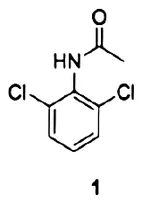
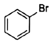
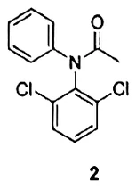
Ullmann · 구리가 아마이드 질소와 Ar–Br을 이어 준다(산화적 부가 → 환원적 제거). SNAr과 달리 활성화기가 없어도 된다.
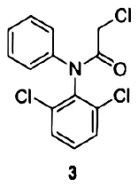
아마이드 교체 · 염기로 아세틸을 떼고 2차 아민으로 만든 뒤, chloroacetyl chloride로 다시 아실화해 CH₂Cl를 심는다. 이 CH₂Cl이 나중에 아세트산의 탄소가 된다.
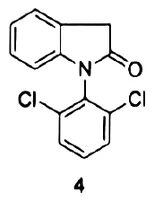
분자내 Friedel–Crafts 알킬화 · AlCl₃가 C–Cl을 당겨 생긴 탄소 양이온을 옆 벤젠의 ortho가 공격 → 5원 락탐(인돌린-2-온). 두 염소 때문에 2,6-다이클로로페닐 쪽은 막혀 있어 반대쪽 고리가 반응한다.
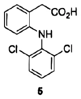
락탐 가수분해 · 염기가 락탐 C=O를 공격해 고리를 연다 → 2차 아민(NH)과 CH₂COOH가 동시에 드러난다. 나트륨 염으로 쓴다.
라세미 법은 Friedel–Crafts 아실화 → Darzens로 글리시드산 에스터 → 가수분해 후 산 가열로 [3,3] 자리옮김 · 탈카복실해 알데하이드 → Ag₂O 산화. (S)-체는 HWE (KEY 22-3) → 환원 → Sharpless 비대칭 에폭시화로 키랄성을 심고, TMS 자리를 Br로 바꾼 뒤 NaIO₄/RuCl₃ diol 절단으로 COOH를 드러낸다.
| 단계 | 핵심반응 | 무엇이 바뀌나 |
|---|---|---|
| 1 | Friedel–Crafts 아실화 | 이소부틸벤젠 → 아릴 메틸 케톤 |
| 2 | Darzens (KEY 18-2) | C=O + ClCH₂CO₂Me → 글리시드산 에스터 |
| 3 | 가수분해 → [3,3] · −CO₂ | 에폭시산 → 알데하이드 |
| 4 | 산화 (Ag₂O) | CHO → COOH |
| (S)-1 | HWE (KEY 22-3) | 케톤 → (E)-α,β-불포화 에스터 |
| (S)-2 | Sharpless 에폭시화 | 알릴 알코올 → 키랄 에폭시알코올 |
| (S)-3 | NaIO₄/RuCl₃ | diol 산화적 절단 → COOH |
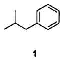
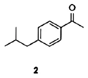
Friedel–Crafts · 아실륨이 이소부틸기의 para를 공격(알킬기가 o/p 지향). 생긴 케톤이 고리를 비활성화해 한 번만 아실화된다.
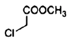
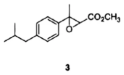
Darzens (KEY 18-2) · 염기가 ClCH₂CO₂Me의 α-H를 떼고, 엔올레이트가 케톤에 부가한 뒤 알콕사이드가 Cl 반대편을 분자내 SN2로 공격해 에폭사이드가 닫힌다.
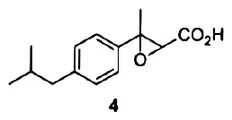
비누화 · 에스터 → 카복실산. 에폭사이드는 그대로 둔다.
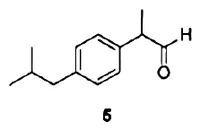
자리옮김 · 탈카복실 · 산이 에폭사이드를 열어 알릴 알코올형이 되고, [3,3]가 일어나며 CO₂가 빠진다. 생긴 엔올이 호변이성해 알데하이드가 된다.
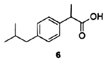
산화 · Ag(I)가 알데하이드를 카복실산으로 올린다. α-탄소는 라세미.
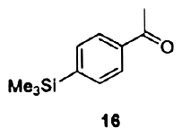
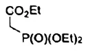
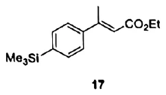
HWE (KEY 22-3) · 포스포네이트 카바니온이 케톤에 부가 → 옥사포스페탄 → 안정한 (E)-알켄. 부산물 인산 다이에스터는 물에 녹아 제거가 쉽다(Wittig의 Ph₃P=O와 차이).
환원 · 에스터 → 1차 알코올. 알릴 알코올이 되어야 다음 Sharpless를 걸 수 있다.
Sharpless 에폭시화 · Ti–타르타르산 착물이 알릴 알코올의 OH를 붙잡고 한쪽 면에서만 산소를 전달한다. 타르타르산의 거울상을 바꾸면 반대 면이 산화된다 — 여기서 (S)가 정해진다.
수소화 분해 · 에폭사이드의 벤질 쪽 C–O가 끊어지며 1,2-diol이 된다. 키랄 중심은 유지.
친전자성 치환 · LiBr + NCS가 만든 Br–Cl에서 Br⁺가 고리를 공격하고 TMS가 빠진다(ipso 치환). TMS는 "자리를 잡아 두는" 역할.
보호 · diol을 아세토나이드로 묶어 다음 유기리튬 단계에서 건드려지지 않게 한다.
리튬–할로젠 교환 · Ar–Br이 Ar–Li가 되고, 이소부티르알데하이드에 부가해 2차 알코올. 이소부틸기의 골격을 여기서 만든다.
탈보호 · 산으로 아세토나이드를 풀어 diol을 되돌린다.
벤질 OH 제거 · 벤질 위치 OH가 수소화 분해로 떨어져 이소부틸기가 완성된다.
산화적 절단 · 1,2-diol이 잘리면서 α-탄소에 COOH가 남는다. 입체중심은 Sharpless에서 정해진 그대로 (S).
마지막 단계는 에스터 1 + 2-aminopyridine 아미노리시스 한 번뿐. 시험에 나오는 건 출발물질 1을 만드는 쪽이다 — saccharin에 SN2로 CH₂CO₂Me를 붙이고, 알콕사이드 염기로 Gabriel–Colman 자리옮김을 걸어 5원 고리를 6원 benzothiazine으로 넓힌 뒤 N-메틸화한다.
| 단계 | 핵심반응 | 무엇이 바뀌나 |
|---|---|---|
| 1 | 아마이드화 (아미노리시스) | CO₂Me + ArNH₂ → CONHAr |
| 2 | 호변이성 | enol ⇌ keto (산성 OH) |
| 1′ | N-알킬화 (SN2) | saccharin N–H → N–CH₂CO₂Me |
| 2′ | Gabriel–Colman 자리옮김 | 5원 고리 → 6원 benzothiazine |
| 3′ | N-메틸화 | 고리 N–H → N–CH₃ |
아미노리시스 · 아민이 에스터 C=O를 공격하고 MeOH가 빠진다. 고온 무수 조건(끓는 xylene)이라 아민이 염을 만들지 않고 반응한다.
호변이성 · enol(4-OH) ⇌ keto. enol 쪽 OH가 아마이드 N–H와 분자내 수소결합을 이뤄 안정하고, 해리하면 음이온이 잘 퍼져 산성도가 높다(enolic acid계라는 이름의 근거).
SN2 · NaH가 이미드 N–H(산성)를 떼고, 생긴 음이온이 BrCH₂CO₂Me를 공격한다.
Gabriel–Colman · 메톡사이드가 고리 C=O를 공격해 고리를 연다(설폰아마이드 음이온 + 방향족 에스터). 그 탄소 음이온이 분자내에서 에스터를 공격해 한 칸 큰 6원 고리로 다시 닫힌다. saccharin·프탈이미도 에스터를 benzothiazine으로 넓히는 정석.
N-메틸화 · 설폰아마이드 N–H를 NaOH로 떼고 MeI를 SN2. 고리 N에 메틸이 붙어 최종 구조의 N–CH₃가 된다.
단 두 단계. 케톤의 엔올레이트가 ethyl trifluoroacetate를 공격하는 Claisen형 축합으로 1,3-diketone을 만들고, 거기에 하이드라진을 넣어 Knorr 피라졸 합성으로 고리를 닫는다. 치환기 위치(5-톨릴 / 3-CF₃)가 시험 포인트.
| 단계 | 핵심반응 | 무엇이 바뀌나 |
|---|---|---|
| 1 | Claisen형 축합 (NaOMe) | 메틸케톤 + CF₃CO₂Et → 1,3-diketone |
| 2 | Knorr 피라졸 합성 | 1,3-diketone + ArNHNH₂ → 피라졸 (−2H₂O) |
혼합 Claisen · NaOMe가 메틸케톤의 α-H를 떼고, 엔올레이트가 에스터 C=O를 공격 → EtO⁻ 이탈 → 1,3-diketone. CF₃가 붙은 쪽 카보닐이 더 친전자성이라 반응이 잘 간다.
Knorr 피라졸 · 하이드라진의 치환된 N이 덜 막힌 아릴케톤 쪽 C=O를 먼저 공격해 하이드라존이 되고, 남은 NH₂가 CF₃ 쪽 카보닐을 분자내 공격 → 물 두 분자가 빠지며 피라졸. 그래서 N1에 설폰아마이드 아릴, C5에 톨릴, C3에 CF₃가 온다.
2차 아민을 포스젠으로 카바모일 클로라이드로 바꾸고 NaN₃로 아실 아자이드를 만든 뒤 가열한다. 여기서 Curtius 자리옮김으로 생긴 이소시아네이트를 옆 벤젠이 분자내 EAS로 잡아 indazol-3-ol 고리가 닫힌다. 마지막은 chloroacetonitrile과 O-알킬화 후 니트릴 가수분해.
| 단계 | 핵심반응 | 무엇이 바뀌나 |
|---|---|---|
| 1 | 카바모일 클로라이드 생성 (COCl₂) | R₂NH → R₂N–COCl |
| 2 | 아자이드 치환 (NaN₃) | N–COCl → N–CON₃ |
| 3 | Curtius + 분자내 EAS | −N₂ → 이소시아네이트 → indazol-3-ol |
| 4 | O-알킬화 + 니트릴 가수분해 | O–H → O–CH₂CN → O–CH₂COOH |
포스젠 아실화 · 2차 아민이 COCl₂의 C를 공격하고 Cl⁻가 빠진다. 피리딘이 HCl을 잡는다.
친핵성 아실 치환 · N₃⁻가 C=O를 공격하고 Cl⁻ 이탈 → 아실(카바모일) 아자이드.
Curtius + EAS · 가열하면 N₂가 빠지면서 옆 질소가 C로 이동 → 이소시아네이트. 그 이소시아네이트 탄소를 같은 분자의 페닐 ortho 자리가 친전자성 방향족 치환으로 공격해 5원 고리가 닫히고, 호변이성해 3-하이드록시인다졸이 된다.
O-알킬화 → 가수분해 · 3-OH(산성)가 ClCH₂CN을 SN2로 공격해 O–CH₂CN. 이어 산 가수분해로 CN → COOH (아마이드를 거친다).
SN2 → 보호기 제거 → SN2 → 가수분해 네 단계. 피페라진은 질소가 둘이라 한쪽을 카바메이트로 막아 두고 벤질 자리에 붙인 뒤, 산으로 풀어 탈탄산시키고 남은 NH에 사슬을 단다.
| 단계 | 핵심반응 | 무엇이 바뀌나 |
|---|---|---|
| 1 | SN2 알킬화 | 벤질 Cl + 2차 아민 → 3차 아민 |
| 2 | 카바메이트 가수분해 → 탈탄산 | N–CO₂Et → N–H |
| 3 | SN2 알킬화 | 남은 NH + Cl–CH₂CH₂O– → 3차 아민 |
| 4 | 에스터 가수분해 → 산성화 | CO₂Me → CO₂H |
SN2 · 벤질 위치 C–Cl은 생긴 양전하가 두 고리로 퍼져 반응성이 크다. 피페라진의 안 막힌 2차 N이 공격하고 Cl⁻가 빠진다. Na₂CO₃가 HCl을 잡는다.
보호기 제거 · 산 조건에서 카바메이트가 가수분해돼 카밤산(N–COOH)이 되고, 끓는점이 높은 xylene에서 가열하면 CO₂가 빠져 2차 아민이 드러난다.
SN2 · 드러난 2차 아민이 1차 알킬 염화물을 공격. 수율이 낮고 40시간 걸리는 이유는 1차 C–Cl이 벤질 자리보다 훨씬 덜 반응성이기 때문.
비누화 → 산성화 · 메틸 에스터가 카복실레이트가 되고, 산 처리로 COOH. 라세미(벤즈하이드릴 탄소가 입체중심이지만 분할하지 않음).
Sonogashira (KEY 23-1)로 아릴 브로마이드와 말단 알카인을 잇고, 끝의 OH를 메실레이트로 바꿔 piperidine과 SN2. 남은 삼중결합을 oxymercuration으로 케톤(Markovnikov)으로 바꾼 뒤 NaBH₄ 환원과 에스터 가수분해로 끝낸다.
| 단계 | 핵심반응 | 무엇이 바뀌나 |
|---|---|---|
| 1 | Sonogashira (KEY 23-1) | Ar–Br + HC≡C–R → Ar–C≡C–R |
| 2 | 메실화 | R–OH → R–OMs (이탈기 활성화) |
| 3 | SN2 알킬화 | OMs + 2차 아민 → 3차 아민 |
| 4 | Oxymercuration | C≡C → 케톤 (Markovnikov) |
| 5 | 케톤 환원 + 에스터 가수분해 | C=O → CH–OH, CO₂Me → CO₂H |
Sonogashira (KEY 23-1) · Pd가 주촉매, Cu가 공촉매다. Ar–Br이 Pd(0)에 산화적 부가 → 구리 아세틸라이드가 금속 교환으로 넘어옴 → trans–cis 이성질화 후 환원적 제거로 Ar–C≡C–R. Et₃N은 말단 알카인을 떼어 구리 사이클을 돌린다. 이어 MsCl/pyridine으로 OH를 OMs로 바꾼다(피리딘은 생긴 옥소늄에서 양성자를 떼는 역할).
SN2 · 메실레이트는 음전하가 세 산소로 퍼져 아주 좋은 이탈기다. 피페리딘의 2차 N이 공격해 3차 아민이 된다.
Oxymercuration · Hg²⁺가 삼중결합에 붙어 삼각형 중간체를 만들고, 물이 양이온을 더 잘 안정화하는 벤젠 쪽 탄소에 들어간다(Markovnikov). HgSO₄가 빠지며 엔올 → 호변이성 → 케톤.
환원 + 비누화 · NaBH₄가 케톤만 2차 알코올로 환원(에스터는 건드리지 않음) → KOH로 에스터 가수분해 → 산 처리. 염산염으로 쓴다.
니트릴을 Ritter 반응으로 t-Bu 아마이드로 바꿔 지향성 금속화의 손잡이로 쓰고, 벤질화 뒤 von Braun 분해 (KEY 23-2)로 아마이드를 다시 니트릴로 되돌린다. Grignard로 케톤을 만들고 BF₃/HF 분자내 EAS로 7원 고리를 닫은 다음, 아실화하면 염화물이 N-메틸을 떼어 간다.
| 단계 | 핵심반응 | 무엇이 바뀌나 |
|---|---|---|
| 1 | Ritter 반응 | C≡N + t-BuOH/H₂SO₄ → CONH-t-Bu |
| 2 | γ-위치 SN2 알킬화 | 다이음이온 + 벤질 Cl → C–C |
| 3 | von Braun 분해 (KEY 23-2) | 2차 아마이드 → 니트릴 |
| 4 | Grignard + 이민 가수분해 | C≡N → C=NH → C=O |
| 5 | 분자내 EAS → 제거 | 케톤 → 7원 고리 + 알켄 |
| 6 | 아실 치환 + N-탈메틸화 | N–CH₃ → N–CO₂Et |
Ritter · 황산이 t-BuOH에서 t-Bu 양이온을 만들고, 니트릴 질소가 이를 공격해 나이트릴륨 → 물이 붙어 t-butyl imidate → 자리옮김해 안정한 아마이드. 3차 알코올처럼 양이온이 잘 생기는 기질에서 쓴다.
다이음이온 알킬화 · n-BuLi가 아마이드 N–H와 3-메틸의 벤질형 C–H를 둘 다 떼어 다이음이온을 만든다. 더 반응성이 큰 탄소 음이온이 벤질 염화물을 SN2로 공격해 C–C 결합이 생긴다.
von Braun (KEY 23-2) · 아마이드의 호변이성체(imidic acid) OH를 POCl₃가 잡아 이미데이트를 만들고, Cl⁻가 들어오며 PO₂Cl이 빠져 클로로이민이 된다. 질소의 전자쌍이 밀어 Cl이 떨어지면 나이트릴륨, 여기서 C–N(t-Bu)이 끊어져 니트릴 + t-BuCl. t-Bu는 금속화를 돕고 나면 이렇게 제거된다.
Grignard · R–MgCl이 니트릴에 한 번만 부가해 이민 염 → 산성 워크업에서 이민 가수분해(−NH₃) → 케톤.
분자내 친전자성 방향족 부가 → 제거 · BF₃가 케톤 산소에 붙어 탄소를 강한 친전자체로 만들고, 염소 달린 벤젠 고리가 공격해 7원 고리가 닫힌다. 이어 HF 조건에서 물이 빠지며 exocyclic C=C가 생긴다.
아실 치환 + 탈메틸화 · 3차 아민 N이 클로로포메이트를 공격해 4차 암모늄이 되고, 떨어져 나온 Cl⁻가 N–CH₃를 SN2로 공격해 CH₃Cl로 떼어 간다. 결과는 N-카바메이트(로라타딘).
o-하이드록시아세토페논을 나이트로화한 뒤 diethyl oxalate와 Claisen형 아실화 → 분자내 부가 → 제거로 크로몬 고리를 만든다. 에스터를 아마이드로 바꾸고 POCl₃로 탈수해 니트릴로, 거기에 아자이드 [3+2]로 테트라졸을 붙인다. 니트로를 수소화로 아민으로 바꾼 뒤 산염화물과 아마이드화.
| 단계 | 핵심반응 | 무엇이 바뀌나 |
|---|---|---|
| 1 | 나이트로화 (SEAr) | Ar–H → Ar–NO₂ (페놀 ortho) |
| 2 | 아실 치환 + 분자내 부가 + 제거 | 크로몬(벤조피란-4-온) 고리 형성 |
| 3 | 에스터 → 아마이드 → 니트릴 | CO₂Et → CONH₂ → C≡N |
| 4 | 테트라졸 형성 (NaN₃) | C≡N → 1H-tetrazol-5-yl |
| 5 | 니트로 환원 (H₂/Pd-C) | NO₂ → NH₂ |
| 6 | 아마이드화 | ArNH₂ + ArCOCl → 아마이드 |
나이트로화 · HNO₃가 만든 NO₂⁺를 페놀 OH가 활성화한 ortho 자리가 공격한다. 이 질소가 나중에 아마이드 N이 된다.
크로몬 고리 형성 · 염기가 페놀을 페녹사이드로 만들고, 이것이 oxalate 에스터를 공격해 새 에스터를 만든다. 이어 아세틸의 α-H가 빠져 생긴 엔올레이트가 그 카보닐을 분자내로 공격(6원 고리) → 염기 조건에서 OH가 E1cB로 빠져 C=C가 생기며 크로몬 완성.
아마이드화 후 탈수 · NH₃가 에스터를 공격해 1차 아마이드, POCl₃가 그 아마이드의 산소를 떼어 니트릴로 만든다(테트라졸을 붙이려면 CN이 있어야 한다).
[3+2] 고리화 · 아자이드 음이온이 니트릴 탄소를 공격하고 말단 N이 분자내로 닫혀 5-치환 1H-테트라졸. 테트라졸 N–H는 COOH의 생물학적 등가체.
접촉 수소화 · NO₂ → NH₂. 크로몬의 C=C는 공액·방향족 성격이라 이 조건에서 거의 건드려지지 않는다.
아마이드화 · 아릴아민이 산염화물을 공격하고 Cl⁻ 이탈. 피리딘이 HCl을 잡는다.
락톤을 열어 만든 케토산에 하이드라진을 붙이면 이민이 생기고, 남은 NH가 COOH를 분자내로 공격해 프탈라진-1-온이 한 번에 닫힌다. 시험 포인트는 오히려 하이드라진 3의 합성 — Michael 부가 ×2 → Dieckmann 축합 → 탈탄산으로 7원 고리 케톤을 만들고 환원적 아민화를 거친다.
| 단계 | 핵심반응 | 무엇이 바뀌나 |
|---|---|---|
| 1 | 염기 가수분해 → 산성화 | 락톤 → 케토산 |
| 2 | 이민 형성 + 분자내 아마이드화 | 케토산 + 하이드라진 → 프탈라진-1-온 |
| 1′ | 락탐 가수분해 | N-메틸피롤리디논 → 아미노산 |
| 2′ | Michael 부가 ×2 | 2차 아민·카복실레이트 + acrylate |
| 3′ | Dieckmann 축합 + 탈탄산 | 다이에스터 → 7원 고리 케톤 |
| 4′ | 환원적 아민화 → 가수분해 | 케톤 → 하이드라진 3 |
락톤 가수분해 · OH⁻가 락톤 C=O를 공격해 고리를 열면 카복실레이트와 엔올이 생기고, 엔올은 호변이성해 케톤이 된다. 산 처리로 COOH.
고리화 · 하이드라진의 치환 N이 케톤과 이민(C=N)을 만들고, 남은 2차 NH가 같은 분자의 COOH를 공격해 물이 빠지며 6원 락탐(프탈라진-1-온)이 닫힌다.
락탐 가수분해 · 산 조건에서 아마이드가 끊어져 2차 아민과 카복실산이 한 분자에 남는다.
Michael 부가 두 번 · 2차 아민 N이 acrylate의 β-탄소에 부가하고, 같은 분자의 카복실레이트도 또 다른 acrylate에 부가한다(화합물 7). NaOEt의 에톡사이드가 7의 에스터를 공격해 치환하면 다루기 쉬운 다이에틸에스터 8이 된다.
Dieckmann · t-BuOK가 α-H를 떼어 만든 엔올레이트가 같은 분자의 다른 에스터를 공격(분자내 Claisen) → β-케토 에스터 → 물/가열로 가수분해 후 탈탄산하면 7원 고리 케톤. 두 에스터 중 어느 쪽이 엔올레이트가 되어도 같은 생성물이 나온다.
환원적 아민화 · 하이드라지드의 말단 NH₂가 케톤과 이민을 만들고 NaBH₄가 C=N을 환원 → C–N 단일결합.
아마이드 가수분해 · 산으로 벤조일을 떼면 자유 하이드라진 3. (벤조하이드라지드는 하이드라진을 한쪽만 쓰게 해 주는 보호된 형태)
Bredereck 이미다졸 합성으로 고리를 만들고(α-클로로 β-케토에스터 + formamide 2당량), 에스터를 LiAlH₄로 알코올까지 내린 뒤 cysteamine의 SH로 치환해 티오에터를 만든다. 마지막은 N-cyano isothiourea와의 치환 — MeS가 이탈기다.
| 단계 | 핵심반응 | 무엇이 바뀌나 |
|---|---|---|
| 1 | Bredereck 이미다졸 합성 | α-클로로케토에스터 + HCONH₂ ×2 → 이미다졸 |
| 2 | 에스터 환원 (LiAlH₄) | CO₂Et → CH₂OH |
| 3 | 티오에터 형성 | CH₂OH + HSCH₂CH₂NH₂ → CH₂–S– |
| 4 | 구아니딘 형성 | RNH₂ + MeS–C(=NCN)NHMe → 구아니딘 |
Bredereck · formamide 한 분자가 케톤과 이민을 만들고, 다른 한 분자의 질소가 Cl을 밀어낸다(SN2). 두 질소가 들어간 뒤 분자내 고리화로 5원 고리가 닫히고 −HCO₂H로 방향족 이미다졸이 된다. formamide가 2당량 필요한 이유가 여기 있다.
강환원 · LiAlH₄가 에스터를 알데하이드에서 멈추지 않고 1차 알코올까지 내린다. (Na/액체 NH₃로도 가능)
치환 · 산 조건에서 OH가 양성자화돼 물로 빠지고, 이미다졸 고리가 안정화한 양이온을 SH(부드러운 친핵체)가 공격한다. 같은 분자의 NH₂는 산 조건에서 양성자화돼 반응하지 않는다 — 산을 쓰는 이유.
구아니딘 형성 · 1차 아민이 isothiourea의 C를 공격하고 MeSH가 빠진다(MeS⁻가 좋은 이탈기). CN이 붙은 구아니딘은 염기성이 낮아 흡수에 유리하다.
피리딘 N-oxide를 손잡이로 쓴다. N-oxide가 4번 자리를 활성화해 나이트로화 → SNAr로 OMe를 심고, Boekelheide 반응 (KEY 23-3)으로 산소를 2-메틸로 옮겨 CH₂OAc를 만든다. 이후 OH → Cl → 티올과 치환해 설파이드를 만들고 m-CPBA로 설폭사이드까지만 산화한다.
| 단계 | 핵심반응 | 무엇이 바뀌나 |
|---|---|---|
| 1 | 나이트로화 + SNAr | N-oxide C4 → NO₂ → OMe |
| 2 | Boekelheide (KEY 23-3) | N-oxide + Ac₂O → 2-CH₂OAc |
| 3 | 에스터 가수분해 | CH₂OAc → CH₂OH |
| 4 | 염소화 (SOCl₂) | CH₂OH → CH₂Cl |
| 5 | 티오에터 형성 | CH₂Cl + ArSH → CH₂–S–Ar |
| 6 | 설파이드 산화 (m-CPBA) | S → S=O (설폭사이드) |
나이트로화 → SNAr · N-oxide의 산소가 전자를 밀어 4번 자리를 활성화한다. NO₂⁺가 거기 붙고, 이어 메톡사이드가 같은 자리를 공격해 NO₂⁻가 빠진다(음전하는 N⁺–O⁻가 받아 준다).
Boekelheide (KEY 23-3) · N-oxide 산소가 Ac₂O를 공격해 N–OAc가 되고, 2번 메틸의 H가 빠져 exocyclic 엔아민형 중간체가 된다. 그 다음 아세테이트가 [3,3]형으로 옮겨 가 CH₂–OAc가 생기며 방향족성이 돌아온다. 산소가 N에서 옆 탄소로 옮겨 가는 반응.
비누화 · 아세테이트를 떼어 1차 알코올로.
알코올 → 염화물 · SOCl₂가 OH를 클로로설파이트로 바꿔 좋은 이탈기로 만든다. 다음 치환을 위한 준비.
SN2 · 염기로 만든 티올레이트(부드럽고 센 친핵체)가 CH₂Cl을 공격한다.
선택적 산화 · 황의 비공유전자쌍이 과산의 O–O를 공격해 설폭사이드. −30 °C 저온과 당량 조절로 설폰까지 가지 않게 막는다. 이 S=O가 위산 조건에서 활성화돼 프로톤 펌프의 SH와 결합한다.
구조식은 골격 구조입니다. 선 끝은 메틸기, 꺾인 지점은 탄소입니다. 카드 윗선 색: 갈색 = 출발물질, 회색 = 중간체, 보라 = 시약·반응 상대, 청록 = 최종 생성물. 노란 배경은 그 단계에서 가장 자주 묻는 포인트입니다. 쐐기(굵은 삼각형) = 앞으로, 점선 쐐기 = 뒤로.
© 면역반 민서정리 @water_.color_